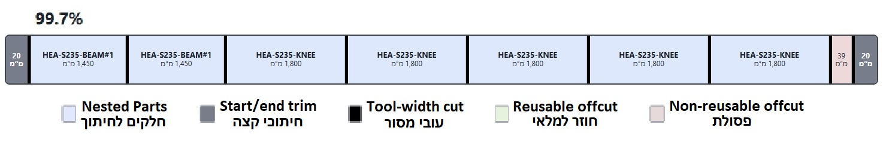

What is nesting
The first step in steel fabrication is to order the raw material that needs to be cut into parts for the project. As the project gets bigger, the problem becomes much more complex.
There can be parts with different lengths, several raw-material lengths that can be ordered, remnants already in stock, saw width, end cuts, and other practical limits.
The main question is: How do we arrange all the parts so we buy and waste as little material as possible?
This problem is called nesting.
With our online NC Nesting calculator, you can drag in a folder with the NC files of the parts, click Calculate, and get detailed cutting plans for ordering the material.
In this article, I want to explain how we can think about reaching the optimal cutting plan, and how to know for sure that there is no better plan.
מה זה נסטינג
The greedy algorithm already takes us a long way
Many basic nesting systems use some form of a greedy algorithm.
- Take the largest part that has not been placed yet.
- Put it in the tightest place where it still fits.
- If it does not fit, open a new raw-material bar.
- Continue until all parts have a place.
This method is fast and returns a complete cutting plan. It is also a real method used in many online nesting systems.
In many nesting groups, the greedy result can already be the best result. But sometimes there is still a better arrangement.
האלגוריתם החמדן כבר מביא אותנו רחוק
Did the greedy solution miss something?
Suppose the greedy solution uses 20 new raw-material bars. This can be an excellent result. But maybe there is another arrangement that needs only 19?
Maybe it is also possible to leave a useful 2,500 mm remnant instead of more small pieces of waste?
A greedy solution usually cannot answer these questions. That is why we add mathematical optimization after the greedy result.
The idea is: first get a good solution that can be used right away, and then mathematically check an alternative that can improve it.
האם הפתרון החמדן פספס משהו?
What our cutting calculator does differently
Our engine compares cutting plans in a fixed order of priority:
- First, reduce the price of the new raw material that must be ordered.
- If the price is the same, reduce the total length of raw material that is used.
- If that is also the same, leave as much material as possible that can go back into stock and be used again.
- If that is also the same, prefer a smaller number of useful remnants.
This matters because an improvement does not always mean saving a full bar. Two cutting plans can use the same amount of material and make exactly the same parts, but leave very different remnants.
For example, two plans can leave the same total remnant. One plan can leave six remnants of 1,000 mm. Another plan can leave two remnants of 3,000 mm. The total amount is the same, but the second option is much more useful for future work.
In the current online calculator, you define a minimum length for a remnant that can go back into stock. The calculation tries to leave as much useful material as possible that is longer than the defined length.
מה המחשבון חיתוך שלנו עושה אחרת
Sometimes the greedy solution is already good
In many normal jobs, a good greedy solution is already hard to improve. So we should not expect meaningful savings every time. The goal is to keep finding opportunities that the fast greedy method misses.
Suppose the greedy solution uses 20 bars. Then the calculator also proves that 20 is the minimum. The cutting plan does not change, but now we know there is no hidden better solution.
The calculator can also quickly find a better plan, but it may need more time to prove that there is no even better solution. If the calculation stops before the proof is complete, the best plan found is still valid and ready for production. More calculation time only gives it more time to return the plan with full certainty that it is optimal.
לפעמים הפתרון החמדן כבר טוב
That is why we start with a greedy solution
Our principle is not: either prove the perfect solution, or return nothing.
First, we create a complete greedy cutting plan. Then we look for better complete plans and continue working toward proof of the best result until the available calculation time ends.
The returned result will always be at the level of the greedy solution or better. We give each result one of two statuses:
Optimal - means the engine found a complete plan and proved mathematically that there is no better plan.
Ready to use - means the engine found a complete and valid plan, but did not have enough time to prove that it is the best possible result in the available time. In any case, it can be used in production. What is unfinished is the proof, not the cutting plan.
לכן אנחנו מתחילים עם פתרון חמדן
In large projects, the calculation time is shared between all groups
The online calculator is free and is meant to make a smart process for ordering cutting material available for every project. In this version, we had to set a two-minute calculation time limit.
More of the time is spent on groups that look most likely to improve beyond the greedy result.
When the shared time ends, the system returns a summary of all cutting plans for the different cutting groups that were defined. The result is complete and useful because every group starts with a valid greedy plan. A group can return an improved result that is not yet proved optimal, or reach a proved optimum.
The version available online is meant to give practical improvements when the calculation time allows it. If you need a full calculation without the time limit, you can contact us.
בפרויקטים גדולים זמן החישוב מתחלק בין כל הקבוצות
Conclusion
In every standard calculator for ordering cutting material, we find the greedy algorithm, and it already gives us a fast and useful cutting plan. Mathematical optimization adds another step: it checks if we can save more material, leave more useful remnants, or prove that the current plan is already optimal. This way, we always start with a solution that can be used, and improve it when possible to achieve real savings.